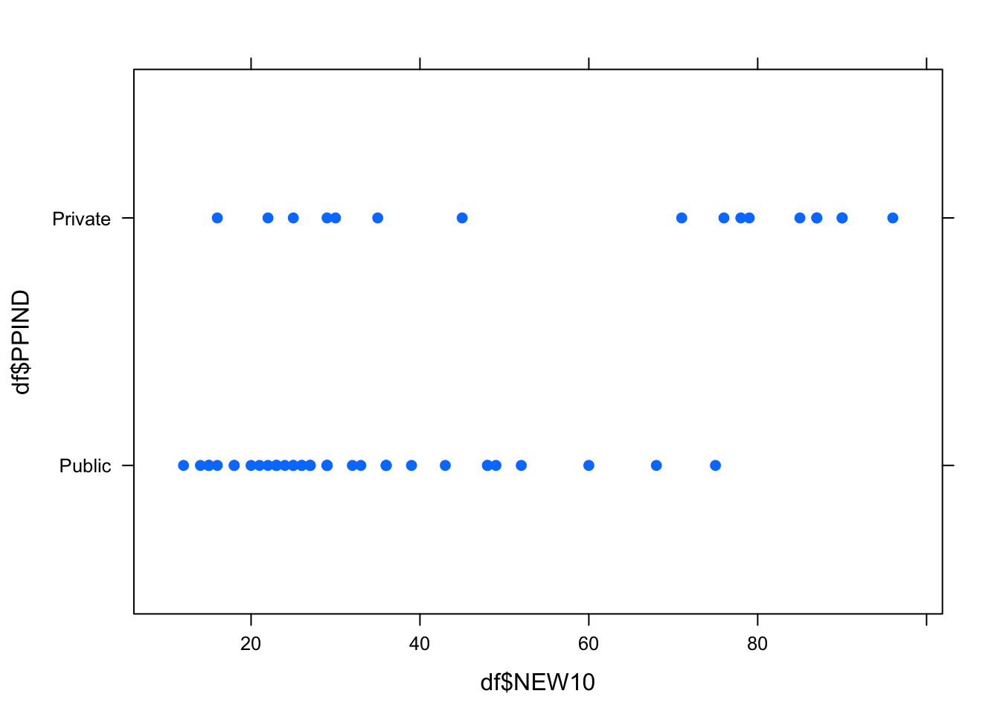
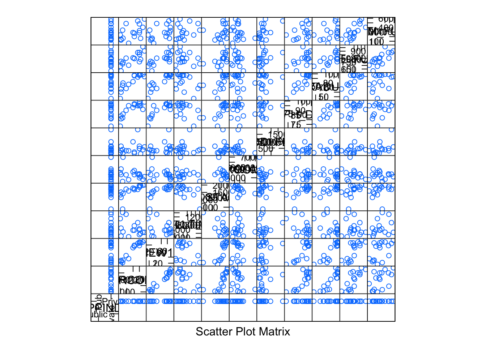

## Loading required package: RColorBrewerЗагружаем данные, все как на паре:
df <- read.csv2(file = "data/I.csv")
df <- subset(df, select = c(PPIND, AVRCOMB, NEW10, FULLTIME, IN_STATE, ROOM, ADD_FEE, PH_D, GRADUAT, SAL_FULL, NUM_FULL))
df$PPIND <- factor(df$PPIND, labels = c("Public", "Private"))
df <- na.exclude(df)
df.private <- subset(df, PPIND == "Private")
# df.private <- df.private[!rownames(df.private) %in% 129, ]Строим регрессию, прологарифмировав денежные данные:
l <- lm(NEW10 ~ AVRCOMB + FULLTIME + log(IN_STATE) + log(ROOM) + log(ADD_FEE) + log(SAL_FULL) + PH_D + GRADUAT + NUM_FULL, data = df.private)
summary(l)##
## Call:
## lm(formula = NEW10 ~ AVRCOMB + FULLTIME + log(IN_STATE) + log(ROOM) +
## log(ADD_FEE) + log(SAL_FULL) + PH_D + GRADUAT + NUM_FULL,
## data = df.private)
##
## Residuals:
## Min 1Q Median 3Q Max
## -6.4902 -2.8873 -0.0423 3.4389 5.7391
##
## Coefficients:
## Estimate Std. Error t value Pr(>|t|)
## (Intercept) -3.093e+02 2.218e+02 -1.394 0.2059
## AVRCOMB 1.783e-01 5.660e-02 3.151 0.0161 *
## FULLTIME 1.888e-03 7.455e-04 2.533 0.0390 *
## log(IN_STATE) 1.422e+01 1.066e+01 1.334 0.2240
## log(ROOM) 9.560e+00 1.151e+01 0.831 0.4336
## log(ADD_FEE) 4.243e+00 2.696e+00 1.574 0.1595
## log(SAL_FULL) -1.689e+01 3.165e+01 -0.534 0.6101
## PH_D -2.557e-01 6.256e-01 -0.409 0.6949
## GRADUAT 5.647e-01 4.513e-01 1.251 0.2511
## NUM_FULL -1.870e-02 2.214e-02 -0.845 0.4262
## ---
## Signif. codes: 0 '***' 0.001 '**' 0.01 '*' 0.05 '.' 0.1 ' ' 1
##
## Residual standard error: 5.926 on 7 degrees of freedom
## Multiple R-squared: 0.9818, Adjusted R-squared: 0.9585
## F-statistic: 42.03 on 9 and 7 DF, p-value: 2.865e-05С отличниками у меня интерпретация как-то стопортися, тут сложнее, чем с государственными. Тут отличники не такой уж и показательный фактор. Так или иначе, отличники там, где много очников, спасибо КО. Можно попробовать удалить, так же как на паре, этот предиктор.
l <- lm(NEW10 ~ FULLTIME + log(IN_STATE) + log(ROOM) + log(ADD_FEE) + log(SAL_FULL) + PH_D + GRADUAT + NUM_FULL, data = df.private)
summary(l)##
## Call:
## lm(formula = NEW10 ~ FULLTIME + log(IN_STATE) + log(ROOM) + log(ADD_FEE) +
## log(SAL_FULL) + PH_D + GRADUAT + NUM_FULL, data = df.private)
##
## Residuals:
## Min 1Q Median 3Q Max
## -9.2380 -6.6540 0.3986 4.1528 11.5618
##
## Coefficients:
## Estimate Std. Error t value Pr(>|t|)
## (Intercept) -1.303e+02 3.119e+02 -0.418 0.68707
## FULLTIME 1.465e-03 1.067e-03 1.373 0.20686
## log(IN_STATE) 3.873e+01 1.061e+01 3.649 0.00650 **
## log(ROOM) -1.840e+01 1.066e+01 -1.727 0.12249
## log(ADD_FEE) 4.442e+00 3.920e+00 1.133 0.28997
## log(SAL_FULL) -1.917e+01 4.602e+01 -0.417 0.68788
## PH_D -9.221e-01 8.564e-01 -1.077 0.31296
## GRADUAT 1.660e+00 4.186e-01 3.966 0.00414 **
## NUM_FULL 1.761e-02 2.749e-02 0.641 0.53965
## ---
## Signif. codes: 0 '***' 0.001 '**' 0.01 '*' 0.05 '.' 0.1 ' ' 1
##
## Residual standard error: 8.62 on 8 degrees of freedom
## Multiple R-squared: 0.9561, Adjusted R-squared: 0.9121
## F-statistic: 21.76 on 8 and 8 DF, p-value: 0.0001171Тут не очень понятно: идти туда, где больше выпускаются, вроде логично, но идти туда где больше платить? Не знаю уж что за “частные” в Америке университеты, может логика там “чем дороже - тем лучше”?
Убираем незначимые признаки:
l.aic <- stepAIC(l)## Start: AIC=78.43
## NEW10 ~ FULLTIME + log(IN_STATE) + log(ROOM) + log(ADD_FEE) +
## log(SAL_FULL) + PH_D + GRADUAT + NUM_FULL
##
## Df Sum of Sq RSS AIC
## - log(SAL_FULL) 1 12.90 607.35 76.790
## - NUM_FULL 1 30.50 624.95 77.276
## <none> 594.45 78.425
## - PH_D 1 86.16 680.61 78.726
## - log(ADD_FEE) 1 95.41 689.86 78.956
## - FULLTIME 1 140.18 734.63 80.025
## - log(ROOM) 1 221.55 816.00 81.810
## - log(IN_STATE) 1 989.68 1584.13 93.088
## - GRADUAT 1 1168.92 1763.37 94.910
##
## Step: AIC=76.79
## NEW10 ~ FULLTIME + log(IN_STATE) + log(ROOM) + log(ADD_FEE) +
## PH_D + GRADUAT + NUM_FULL
##
## Df Sum of Sq RSS AIC
## - NUM_FULL 1 18.27 625.63 75.294
## - PH_D 1 74.16 681.51 76.749
## <none> 607.35 76.790
## - log(ADD_FEE) 1 85.43 692.79 77.028
## - FULLTIME 1 133.08 740.44 78.158
## - log(ROOM) 1 213.36 820.71 79.908
## - log(IN_STATE) 1 1185.44 1792.79 93.191
## - GRADUAT 1 1702.80 2310.15 97.502
##
## Step: AIC=75.29
## NEW10 ~ FULLTIME + log(IN_STATE) + log(ROOM) + log(ADD_FEE) +
## PH_D + GRADUAT
##
## Df Sum of Sq RSS AIC
## <none> 625.63 75.294
## - PH_D 1 85.83 711.45 75.480
## - log(ADD_FEE) 1 197.08 822.70 77.949
## - log(ROOM) 1 219.19 844.81 78.400
## - FULLTIME 1 376.78 1002.41 81.308
## - log(IN_STATE) 1 1562.62 2188.24 94.580
## - GRADUAT 1 2220.89 2846.52 99.051summary(l.aic)##
## Call:
## lm(formula = NEW10 ~ FULLTIME + log(IN_STATE) + log(ROOM) + log(ADD_FEE) +
## PH_D + GRADUAT, data = df.private)
##
## Residuals:
## Min 1Q Median 3Q Max
## -10.2819 -5.0805 0.6409 3.5257 13.9833
##
## Coefficients:
## Estimate Std. Error t value Pr(>|t|)
## (Intercept) -2.744e+02 8.935e+01 -3.071 0.011817 *
## FULLTIME 1.773e-03 7.224e-04 2.454 0.034020 *
## log(IN_STATE) 3.831e+01 7.665e+00 4.998 0.000539 ***
## log(ROOM) -1.694e+01 9.052e+00 -1.872 0.090744 .
## log(ADD_FEE) 5.188e+00 2.923e+00 1.775 0.106313
## PH_D -8.018e-01 6.845e-01 -1.171 0.268638
## GRADUAT 1.615e+00 2.711e-01 5.958 0.000140 ***
## ---
## Signif. codes: 0 '***' 0.001 '**' 0.01 '*' 0.05 '.' 0.1 ' ' 1
##
## Residual standard error: 7.91 on 10 degrees of freedom
## Multiple R-squared: 0.9538, Adjusted R-squared: 0.926
## F-statistic: 34.38 on 6 and 10 DF, p-value: 4.102e-06И PH_D тоже:
l.aic <- update(l.aic, . ~ . -PH_D)
summary(l.aic)##
## Call:
## lm(formula = NEW10 ~ FULLTIME + log(IN_STATE) + log(ROOM) + log(ADD_FEE) +
## GRADUAT, data = df.private)
##
## Residuals:
## Min 1Q Median 3Q Max
## -14.5133 -3.0373 0.8881 3.4806 12.1038
##
## Coefficients:
## Estimate Std. Error t value Pr(>|t|)
## (Intercept) -2.974e+02 8.863e+01 -3.355 0.006419 **
## FULLTIME 1.779e-03 7.345e-04 2.422 0.033879 *
## log(IN_STATE) 3.399e+01 6.833e+00 4.974 0.000419 ***
## log(ROOM) -1.464e+01 8.984e+00 -1.630 0.131402
## log(ADD_FEE) 4.351e+00 2.882e+00 1.510 0.159311
## GRADUAT 1.350e+00 1.510e-01 8.935 2.25e-06 ***
## ---
## Signif. codes: 0 '***' 0.001 '**' 0.01 '*' 0.05 '.' 0.1 ' ' 1
##
## Residual standard error: 8.042 on 11 degrees of freedom
## Multiple R-squared: 0.9474, Adjusted R-squared: 0.9235
## F-statistic: 39.64 on 5 and 11 DF, p-value: 1.133e-06Попробуем выкинуть еще что-нибудь:
l.aic.room <- update(l.aic, . ~ . -log(ROOM))
l.aic.add_fee <- update(l.aic, . ~ . -log(ADD_FEE))
l.aic.add_fee.room <- update(l.aic, . ~ . -log(ADD_FEE) -log(ROOM))
anova(l.aic, l.aic.room, l.aic.add_fee, l.aic.add_fee.room)## Analysis of Variance Table
##
## Model 1: NEW10 ~ FULLTIME + log(IN_STATE) + log(ROOM) + log(ADD_FEE) +
## GRADUAT
## Model 2: NEW10 ~ FULLTIME + log(IN_STATE) + log(ADD_FEE) + GRADUAT
## Model 3: NEW10 ~ FULLTIME + log(IN_STATE) + log(ROOM) + GRADUAT
## Model 4: NEW10 ~ FULLTIME + log(IN_STATE) + GRADUAT
## Res.Df RSS Df Sum of Sq F Pr(>F)
## 1 11 711.45
## 2 12 883.27 -1 -171.816 2.6565 0.13140
## 3 12 858.86 0 24.414
## 4 13 1106.34 -1 -247.485 3.8264 0.07632 .
## ---
## Signif. codes: 0 '***' 0.001 '**' 0.01 '*' 0.05 '.' 0.1 ' ' 1Больше ничего не выкинуть.
l <- l.aic
summary(l)##
## Call:
## lm(formula = NEW10 ~ FULLTIME + log(IN_STATE) + log(ROOM) + log(ADD_FEE) +
## GRADUAT, data = df.private)
##
## Residuals:
## Min 1Q Median 3Q Max
## -14.5133 -3.0373 0.8881 3.4806 12.1038
##
## Coefficients:
## Estimate Std. Error t value Pr(>|t|)
## (Intercept) -2.974e+02 8.863e+01 -3.355 0.006419 **
## FULLTIME 1.779e-03 7.345e-04 2.422 0.033879 *
## log(IN_STATE) 3.399e+01 6.833e+00 4.974 0.000419 ***
## log(ROOM) -1.464e+01 8.984e+00 -1.630 0.131402
## log(ADD_FEE) 4.351e+00 2.882e+00 1.510 0.159311
## GRADUAT 1.350e+00 1.510e-01 8.935 2.25e-06 ***
## ---
## Signif. codes: 0 '***' 0.001 '**' 0.01 '*' 0.05 '.' 0.1 ' ' 1
##
## Residual standard error: 8.042 on 11 degrees of freedom
## Multiple R-squared: 0.9474, Adjusted R-squared: 0.9235
## F-statistic: 39.64 on 5 and 11 DF, p-value: 1.133e-06Итоги: поступают там где больше выпускаются (то же, что и для государственных) и там где больше платить (логика непонятна, но может “раз нужно платить - то чего мелочиться”)
Вторая часть задания: построить модель для всех университетов, используя эффекты взаимодействия с фактором PPIND. Строим и выкидываем незначимое.
contrasts(df$PPIND) <- contr.sum
l <- lm(NEW10 ~ FULLTIME * PPIND + log(IN_STATE) * PPIND + log(ROOM) * PPIND + GRADUAT * PPIND, data = df)
summary(l)##
## Call:
## lm(formula = NEW10 ~ FULLTIME * PPIND + log(IN_STATE) * PPIND +
## log(ROOM) * PPIND + GRADUAT * PPIND, data = df)
##
## Residuals:
## Min 1Q Median 3Q Max
## -20.0636 -4.2228 0.6753 4.4315 21.8903
##
## Coefficients:
## Estimate Std. Error t value Pr(>|t|)
## (Intercept) -9.172e+01 5.874e+01 -1.562 0.12511
## FULLTIME 1.156e-03 4.914e-04 2.353 0.02286 *
## PPIND1 1.692e+02 5.874e+01 2.880 0.00597 **
## log(IN_STATE) 1.252e+01 4.670e+00 2.681 0.01009 *
## log(ROOM) -9.602e+00 6.180e+00 -1.554 0.12696
## GRADUAT 1.004e+00 1.148e-01 8.745 2.02e-11 ***
## FULLTIME:PPIND1 -7.299e-04 4.914e-04 -1.485 0.14416
## PPIND1:log(IN_STATE) -2.240e+01 4.670e+00 -4.798 1.66e-05 ***
## PPIND1:log(ROOM) 7.646e+00 6.180e+00 1.237 0.22215
## PPIND1:GRADUAT -3.578e-01 1.148e-01 -3.118 0.00311 **
## ---
## Signif. codes: 0 '***' 0.001 '**' 0.01 '*' 0.05 '.' 0.1 ' ' 1
##
## Residual standard error: 10.4 on 47 degrees of freedom
## Multiple R-squared: 0.8463, Adjusted R-squared: 0.8169
## F-statistic: 28.76 on 9 and 47 DF, p-value: 3.265e-16l.aic <- stepAIC(l)## Start: AIC=275.92
## NEW10 ~ FULLTIME * PPIND + log(IN_STATE) * PPIND + log(ROOM) *
## PPIND + GRADUAT * PPIND
##
## Df Sum of Sq RSS AIC
## - PPIND:log(ROOM) 1 165.41 5244.3 275.75
## <none> 5078.9 275.92
## - FULLTIME:PPIND 1 238.37 5317.2 276.53
## - PPIND:GRADUAT 1 1050.34 6129.2 284.63
## - PPIND:log(IN_STATE) 1 2487.15 7566.0 296.64
##
## Step: AIC=275.74
## NEW10 ~ FULLTIME + PPIND + log(IN_STATE) + log(ROOM) + GRADUAT +
## FULLTIME:PPIND + PPIND:log(IN_STATE) + PPIND:GRADUAT
##
## Df Sum of Sq RSS AIC
## - log(ROOM) 1 100.15 5344.4 274.82
## <none> 5244.3 275.75
## - FULLTIME:PPIND 1 294.45 5538.7 276.86
## - PPIND:GRADUAT 1 1371.80 6616.1 286.99
## - PPIND:log(IN_STATE) 1 2324.03 7568.3 294.65
##
## Step: AIC=274.82
## NEW10 ~ FULLTIME + PPIND + log(IN_STATE) + GRADUAT + FULLTIME:PPIND +
## PPIND:log(IN_STATE) + PPIND:GRADUAT
##
## Df Sum of Sq RSS AIC
## <none> 5344.4 274.82
## - FULLTIME:PPIND 1 291.6 5636.0 275.85
## - PPIND:GRADUAT 1 1519.5 6863.9 287.09
## - PPIND:log(IN_STATE) 1 2276.0 7620.4 293.05summary(l.aic)##
## Call:
## lm(formula = NEW10 ~ FULLTIME + PPIND + log(IN_STATE) + GRADUAT +
## FULLTIME:PPIND + PPIND:log(IN_STATE) + PPIND:GRADUAT, data = df)
##
## Residuals:
## Min 1Q Median 3Q Max
## -20.427 -5.467 1.120 5.142 22.181
##
## Coefficients:
## Estimate Std. Error t value Pr(>|t|)
## (Intercept) -1.544e+02 4.277e+01 -3.610 0.000719 ***
## FULLTIME 1.250e-03 4.899e-04 2.551 0.013916 *
## PPIND1 2.184e+02 4.277e+01 5.106 5.37e-06 ***
## log(IN_STATE) 1.038e+01 4.486e+00 2.314 0.024888 *
## GRADUAT 1.054e+00 1.101e-01 9.572 8.42e-13 ***
## FULLTIME:PPIND1 -8.011e-04 4.899e-04 -1.635 0.108439
## PPIND1:log(IN_STATE) -2.049e+01 4.486e+00 -4.568 3.34e-05 ***
## PPIND1:GRADUAT -4.108e-01 1.101e-01 -3.733 0.000494 ***
## ---
## Signif. codes: 0 '***' 0.001 '**' 0.01 '*' 0.05 '.' 0.1 ' ' 1
##
## Residual standard error: 10.44 on 49 degrees of freedom
## Multiple R-squared: 0.8383, Adjusted R-squared: 0.8152
## F-statistic: 36.29 on 7 and 49 DF, p-value: < 2.2e-16Контрасты:
contrasts(df$PPIND)## [,1]
## Public 1
## Private -1Поступать туда, откуда выпускаются - это мы видели Связь платы за обучение и типа университета хорошо проглядывается: значение сильно отрицательное. Закончить немного важнее в частных (видимо, чтобы деньги не пропали) А сам тип университета, думаю, означает, что NEW10 идут в государственные университеты.
xyplot(df$PPIND ~ df$NEW10, pch=19)
splom(df.private)